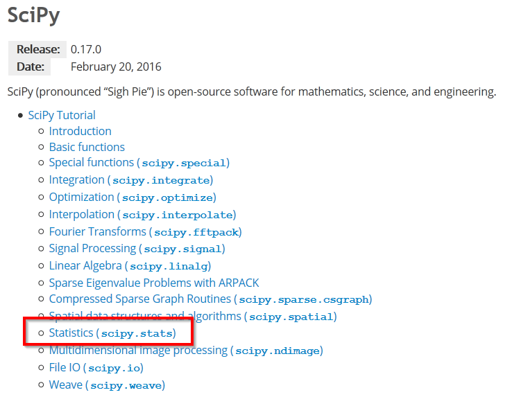

Exemplo do uso de numpy e scipy: regressão linear.¶
import numpy as np
%matplotlib inline
from matplotlib import pyplot as pl

x = np.array([1.0, 2.0, 3.0, 4.0, 5.0])
y = np.array([1.0, 2.1, 2.8, 4.1, 5.2])
p = pl.plot(x,y, 'o')


from scipy.stats import linregress
m, b, R, p, SEm = linregress(x, y)
m: decliveb: ordenada na origemR: coeficiente de correlação (de Pearson)p: p-value do teste F em que H0: y = const, independente de xSEm: erro padrão do declive
Falta calcular o SE da ordenada na origem.
def lin_regression(x, y):
"""Simple linear regression (y = m * x + b + error)."""
m, b, R, p, SEm = linregress(x, y)
# need to compute SEb, linregress only computes SEm
n = len(x)
SSx = np.var(x, ddof=1) * (n-1) # this is sum( (x - mean(x))**2 )
SEb2 = SEm**2 * (SSx/n + np.mean(x)**2)
SEb = SEb2**0.5
return m, b, SEm, SEb, R, p
m, b, Sm, Sb, R, p = lin_regression(x, y)
print('m = {:>.4g} +- {:6.4f}'.format(m, Sm))
print('b = {:>.4g} +- {:6.4f}\n'.format(b, Sb))
print('R2 = {:7.5f}'.format(R**2))
print('p of test F : {:<8.6f}'.format(p))
m = 1.04 +- 0.0503
b = -0.08 +- 0.1669
R2 = 0.99302
p of test F : 0.000248
pl.plot(x,y, 'o')
pl.xlim(0,None)
pl.ylim(0, None)
# desenho da recta, dados 2 pontos extremos
# escolhemos a origem e o max(x)
x2 = np.array([0, max(x)])
pl.plot(x2, m * x2 + b, '-')
# Anotação sobre o gráfico:
ptxt = 'm = {:>.4g} +- {:6.4f}\nb = {:>.4g} +- {:6.4f}\nR2 = {:7.5f}'
t = pl.text(0.5, 4, ptxt.format(m, Sm, b, Sb, R**2), fontsize=14)